164种刻印
397个境界版本
刻印池
境界
显示 158 种刻印
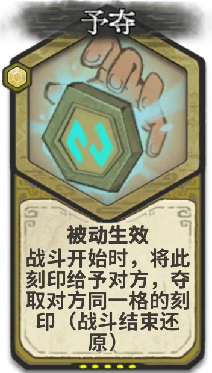
予夺
Bestow and Seize刻印值 1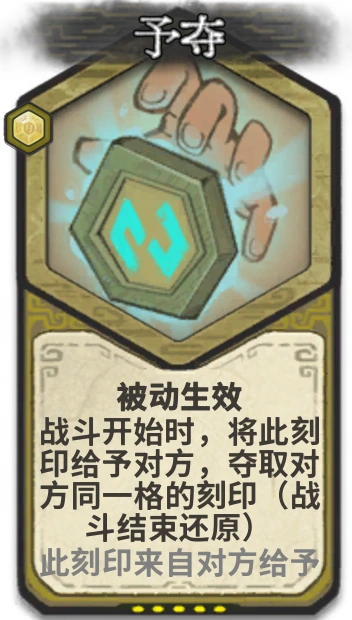
予夺
Bestow and Seize刻印值 1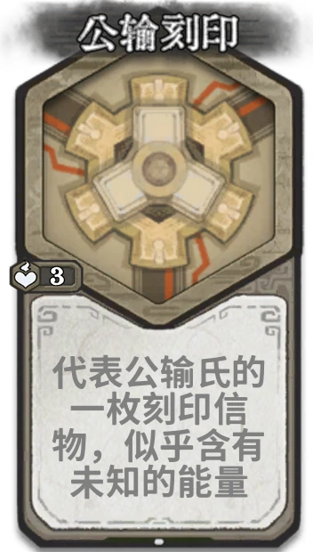
公输刻印
Gongshu's Sigil刻印值 0
刻印强化
Sigil Enhancement刻印值 1
卸劲
Dissipate Force刻印值 1
厄劫
Disaster刻印值 1
压制
Suppress刻印值 1
变换
Exchange刻印值 1
困仙
Immortal Trapping刻印值 2
固本元
Strengthen Fundamental Essence刻印值 2
固防
Solidify Defense刻印值 1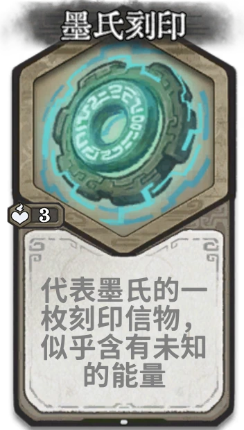
墨氏刻印
Mo's Sigil刻印值 0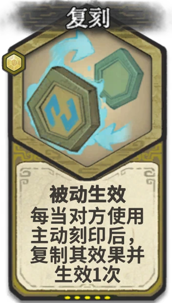
复刻
Replicate刻印值 1
强攻
Strong Attack刻印值 1
扩生机
Expand Vitality刻印值 1
承载
Bear刻印值 2
护体
Guard Up刻印值 2
机关引擎
Mechanism Engine刻印值 1
机关盾
Mechanism Shield刻印值 1
机关组装
Mechanism Assembly刻印值 1
汲取
Absorb刻印值 2
涌神力
Surge of Divine Power刻印值 1
淬毒
Poison Tempering刻印值 2
溢灵
Spirit Overflow刻印值 3
灵纹机关
Spirit Rune Mechanism刻印值 1
生命
HP刻印值 1
画龙
Draw Dragon刻印值 2
碎防
Smash DEF刻印值 1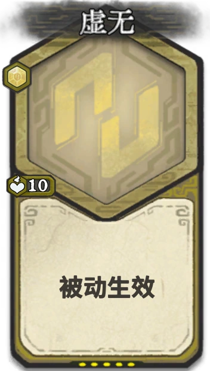
虚无
Void刻印值 1
调息
Regulate Breathing刻印值 1
辟邪
Hexproof刻印值 1
逍遥
Carefree刻印值 1
速度
Speed刻印值 2
预防
Prevent刻印值 2
驱邪
Exorcise Evil刻印值 1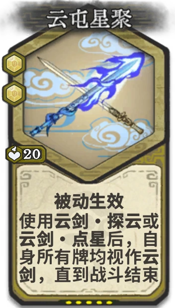
云屯星聚
Clouds Gather and Stars Converge刻印值 2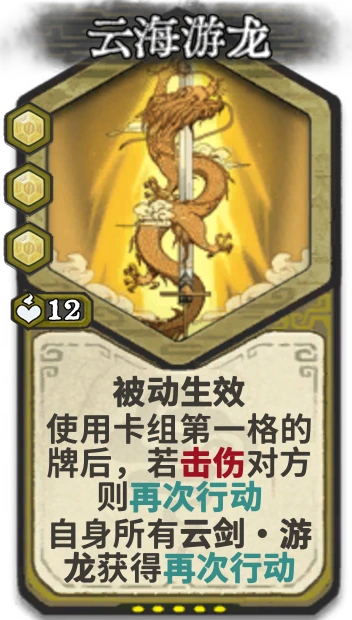
云海游龙
Cloud Sea Wandering Dragon刻印值 3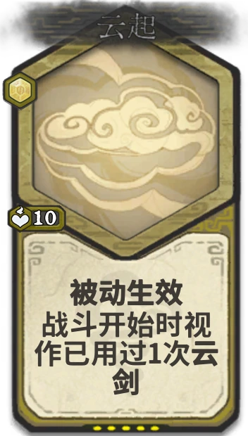
云起
Cloud Rise刻印值 1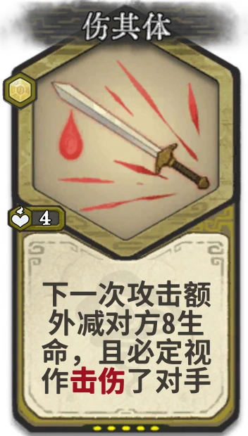
伤其体
Harm the Body刻印值 1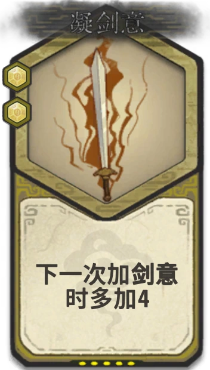
凝剑意
Condense Sword Intent刻印值 2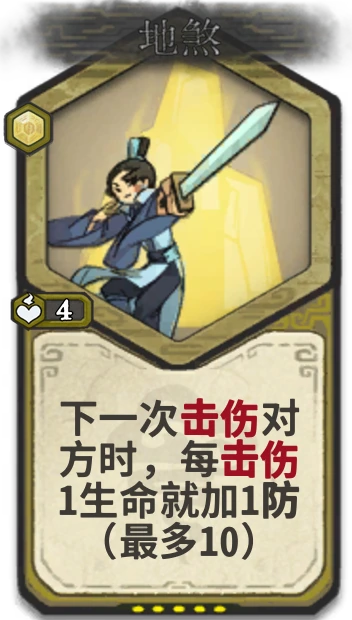
地煞
Earth Fiend刻印值 1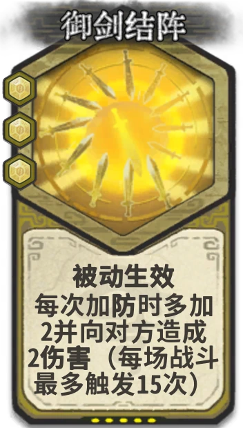
御剑结阵
Control Sword to Form Formation刻印值 3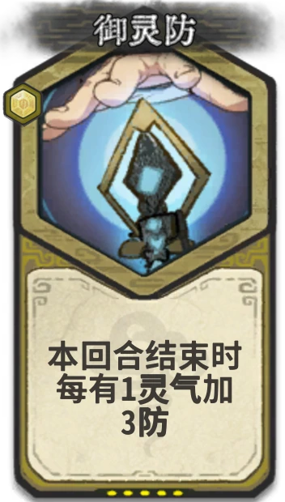
御灵防
Ward Spiritstat Shield刻印值 1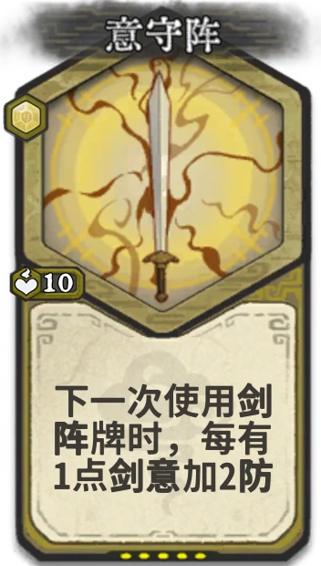
意守阵
Concentrate on Formation刻印值 1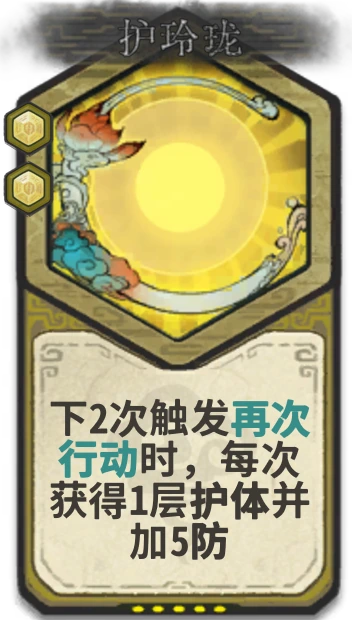
护玲珑
Guard Delicate Bracelet刻印值 2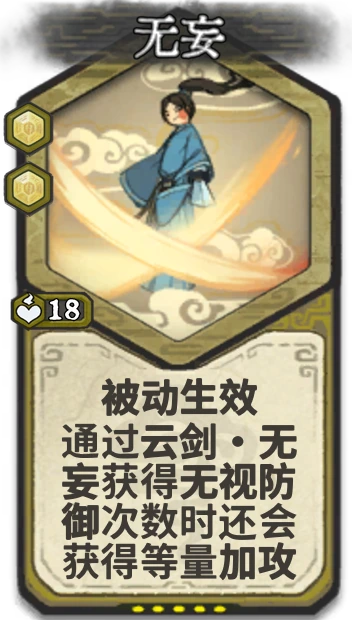
无妄
Necessity刻印值 2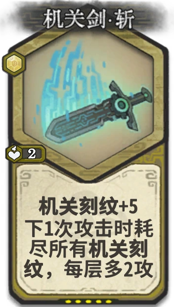
机关剑·斩
Mechanism Sword - Slash刻印值 1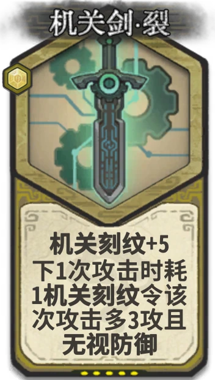
机关剑·裂
Mechanism Sword - Split刻印值 1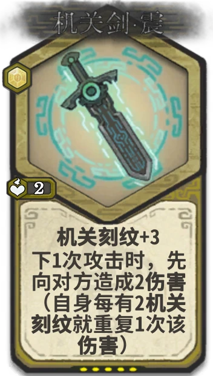
机关剑·震
Mechanism Sword - Shock刻印值 1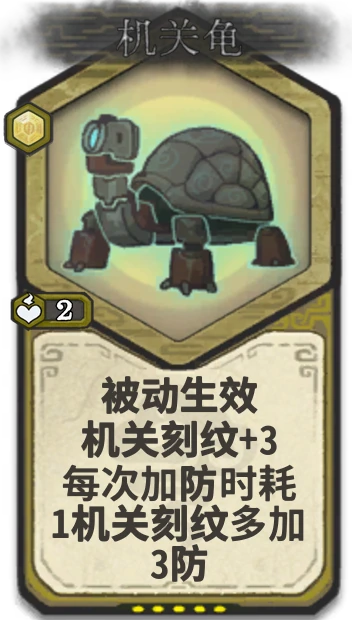
机关龟
Mechanism Turtle刻印值 1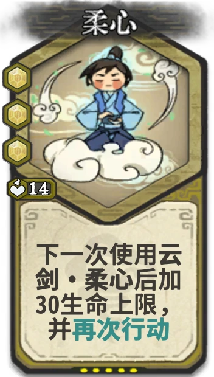
柔心
Soft Heart刻印值 3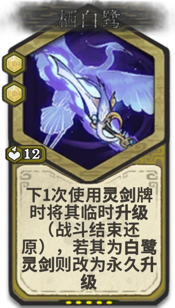
栖白鹭
Perch Egret刻印值 2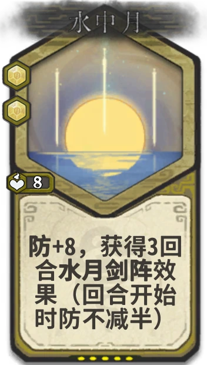
水中月
Moon in Water刻印值 2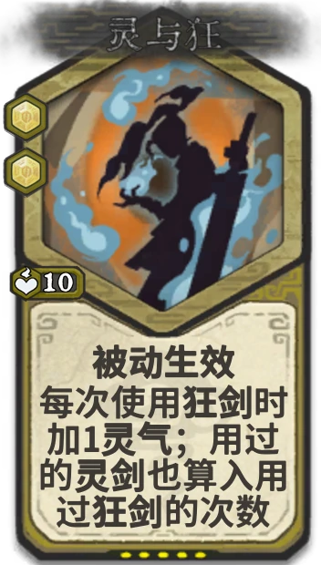
灵与狂
Spirit and Unrestrain刻印值 2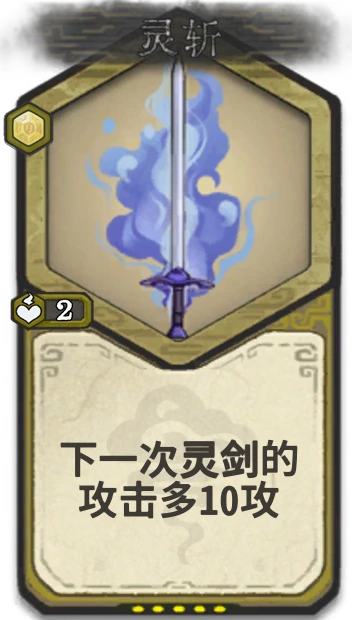
灵斩
Spirit Slash刻印值 1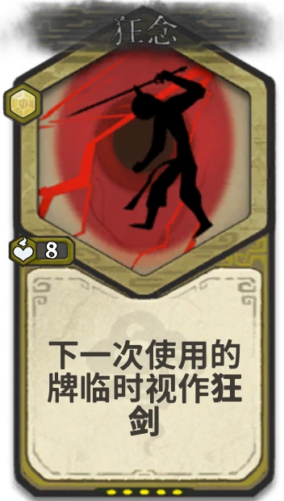
狂念
Madness刻印值 1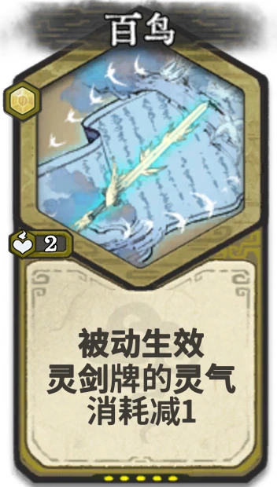
百鸟
Hundred Birds刻印值 1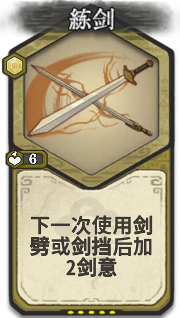
练剑
Sword Practice刻印值 1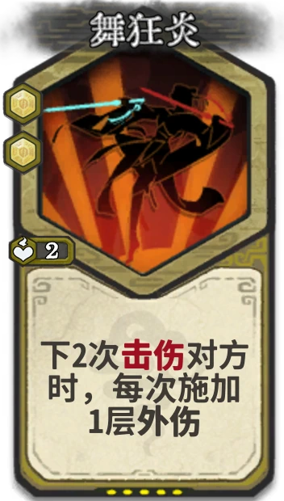
舞狂炎
Wield Flame Dance刻印值 2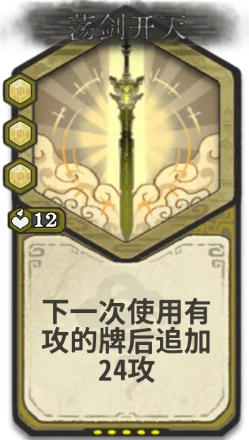
荡剑开天
Swing Sword to Split Heaven刻印值 3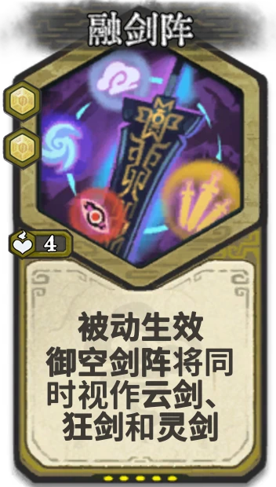
融剑阵
Merge Fusion Style刻印值 2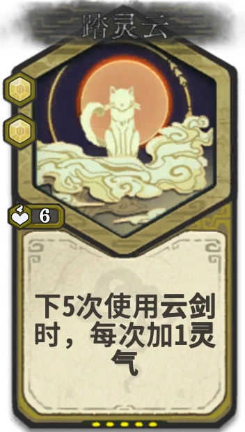
踏灵云
Tread Spirit Clouds刻印值 2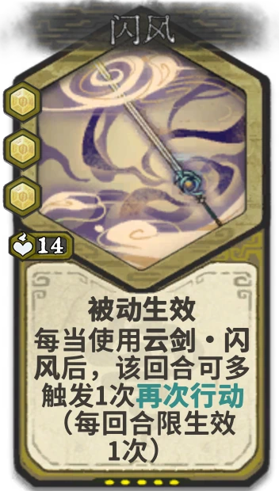
闪风
Flash Wind刻印值 3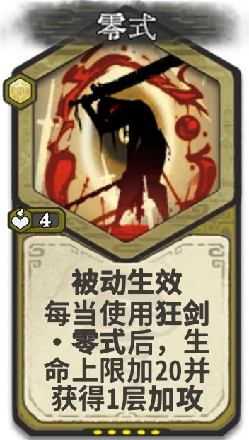
零式
Zero Form刻印值 1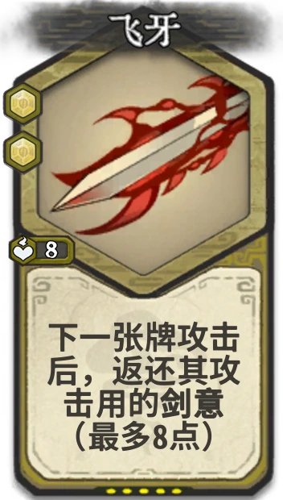
飞牙
Flying Fang刻印值 2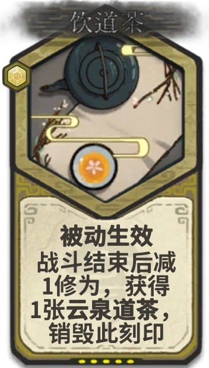
饮道茶
Sip Spring Course Tea刻印值 1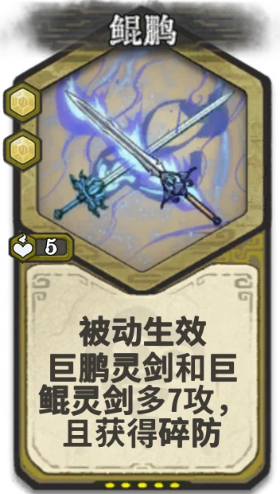
鲲鹏
Kunpeng刻印值 2
两仪
Yin-Yang刻印值 2
化星灵
Transform Star Spirit刻印值 1
卜灵灯
Divine with Lamp刻印值 2
占卦象
Divine Hexagram刻印值 1
天元映星
Heavenly Axis Reflects Stars刻印值 3
布星卦
Arrange Astral Hexagram刻印值 2
底牌
Trump Card刻印值 2
引征
Ko Threat Extension刻印值 3
惊雷破
Thunder Break刻印值 1
扇星月
Fan Star-Moon Breeze刻印值 2
拂清风
Brush Birdie Wind刻印值 1
捉困鳖
Capture Trapped Turtle刻印值 2
捕蝉
Catch Cicada刻印值 3
无情
Ruthless刻印值 1
机关星仪
Mechanism Star Instrument刻印值 1
机关猫
Mechanism Cat刻印值 1
机关蛇
Mechanism Snake刻印值 1
机关鼠
Mechanism Rat刻印值 1
溃其伤
Aggravate Internal Injury刻印值 3
祭雷
Sacrifice to Thunder刻印值 3
离之火
Flame of Li刻印值 2
移星
Shift Stars刻印值 1
续天命
Continue Heavenly Fate刻印值 2
聚星力
Gather Star Power刻印值 1
落卦
Hexagram Fall刻印值 1
血梅
Blood Plum刻印值 1
衍星位
Derive Star Point刻印值 2
逢春
Spring Return刻印值 2
隐孤虚
Hide in Solitary Void刻印值 2
震伤
Shock Injury刻印值 2
霹雳
Thunderbolt刻印值 1
黯星伤魂
Dark Star Soul Injury刻印值 1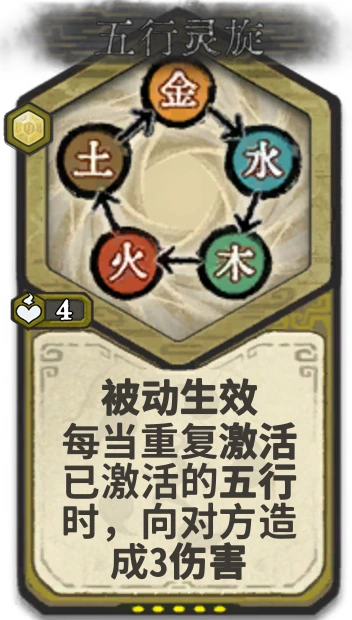
五行灵旋
Five Elements Spirit Spin刻印值 1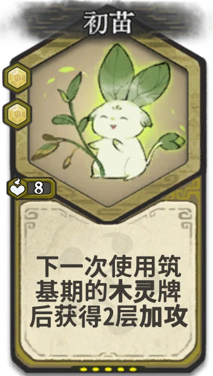
初苗
Young Seedling刻印值 2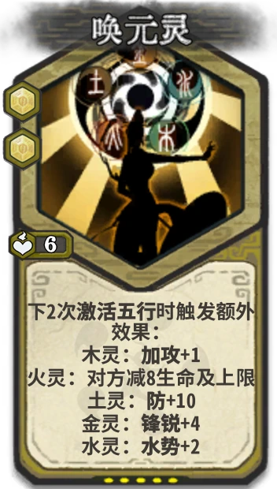
唤元灵
Summon Elements Anima刻印值 2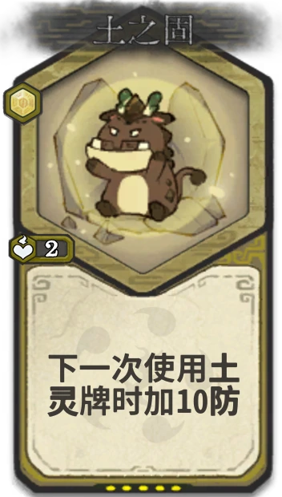
土之固
Earth's Firmness刻印值 1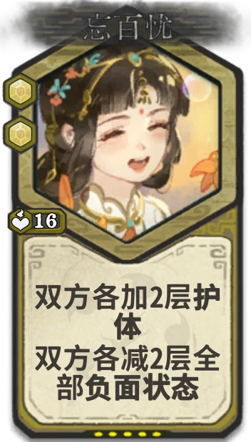
忘百忧
Banish All Worries刻印值 2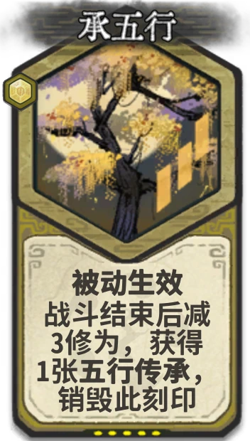
承五行
Bear Five Elements刻印值 1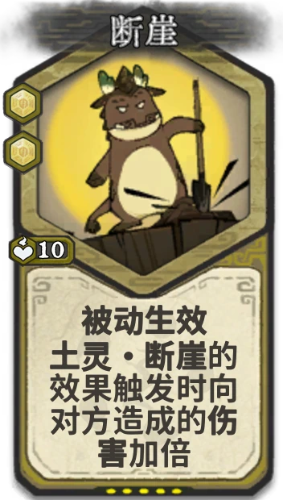
断崖
Cliff刻印值 2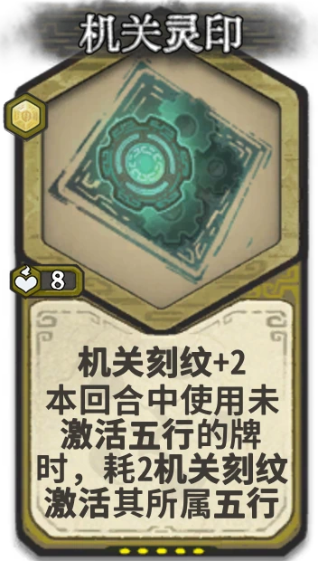
机关灵印
Mechanism Spirit Seal刻印值 1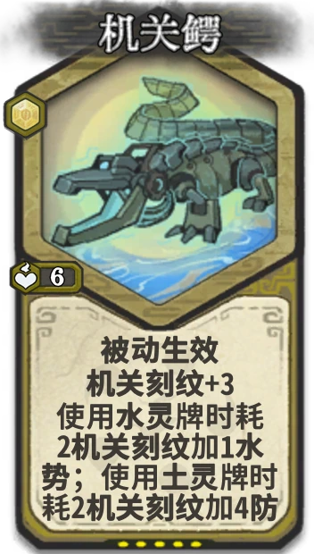
机关鳄
Mechanism Crocodile刻印值 1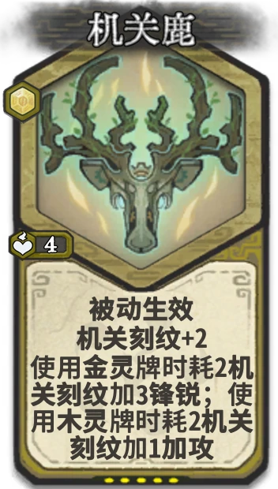
机关鹿
Mechanism Deer刻印值 1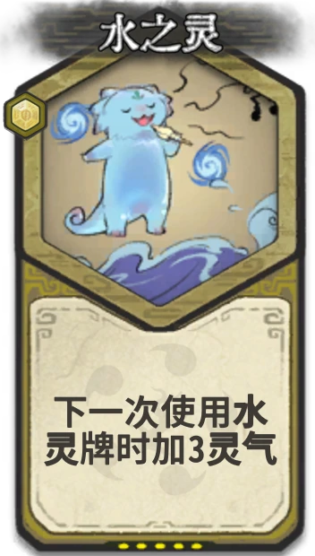
水之灵
Water Spirit刻印值 1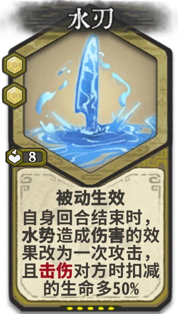
水刃
Water Blade刻印值 2汹涌
Turbulence刻印值 2泉之涌
Spring Surge刻印值 2浑天克
Cosmos Overcoming刻印值 2混元机关
Cosmos Mechanism刻印值 1滋养
Nourish刻印值 1滴天髓
Heavenly Marrow刻印值 3火之炽
Fire's Blaze刻印值 1火鞭
Fire Whip刻印值 2灵阵展开
Spirit Formation Deployment刻印值 3炼鼎
Refine Cauldron刻印值 1热砂
Hot Sand刻印值 1熔岩
Lava刻印值 1燃咒印
Ignite Burning Seal刻印值 3穿心
Heart Pierce刻印值 1筑城
Build Fortress刻印值 2舞花灵
Dance with Blossom Spirits刻印值 2融混元
Blend Cosmos刻印值 1金之锐
Metal's Sharpness刻印值 1锐之刺
Sharp Thrust刻印值 1震山崩
Shake for Landslide刻印值 2修玄心
Cultivate Unwavering Soul刻印值 2冥之势
Nether Momentum刻印值 2冥心
Nether Heart刻印值 2坚体魄
Solid Physique刻印值 2守势
Defensive Posture刻印值 1寸劲
Inch Force刻印值 2展灵翼
Unfold Spirit Wings刻印值 2崩拳劲
Crash Fist Power刻印值 1引冥灵
Invoke Nether Spirit刻印值 1御玄
Resist Xuan刻印值 1悬气势
Suspend Momentum刻印值 1拥冥月
Embrace Styx Moon刻印值 3拳风
Fist Wind刻印值 1挣脱
Break Free刻印值 1机关狮
Mechanism Lion刻印值 1机关虎
Mechanism Tiger刻印值 1机关豹
Mechanism Leopard刻印值 1法天象地
Imitate Heaven and Earth刻印值 3涌灵炁
Surge Spiritual Qi刻印值 2玄疗
Xuan Healing刻印值 1破玄魔
Shatter Xuan Demon刻印值 2破限
Break Limit刻印值 1磅礴势
Majestic Momentum刻印值 3血影遁
Blood Shadow Agility刻印值 2训练机关
Training Mechanism刻印值 1诱敌
Lure Enemy刻印值 2赤血怒
Scarlet Blood Rage刻印值 3返生
Resurrection刻印值 1迷踪
Elusive刻印值 1追猛攻
Chase Fierce Attack刻印值 2锻冥魄
Temper Nether Soul刻印值 1锻拳
Fist Training刻印值 1没有符合筛选条件的刻印。